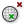

 Mesh Inclusion
Component Index > Grasshopper > Mesh > Analysis > MInc
Test a point for Mesh inclusion
Inputs
| Name | ID | Description | Type |
|---|---|---|---|
| Mesh | M | Mesh for inclusion test (only closed meshes will be considered) | Mesh |
| Point | P | Point for inclusion test | Point |
| Strict | S | If true, then the inclusion is strict | Boolean |
Outputs
| Name | ID | Description | Type |
|---|---|---|---|
| Inside | I | Inside flag for point inclusion | Boolean |
Copyright © 2016 Robert McNeel & Associates.